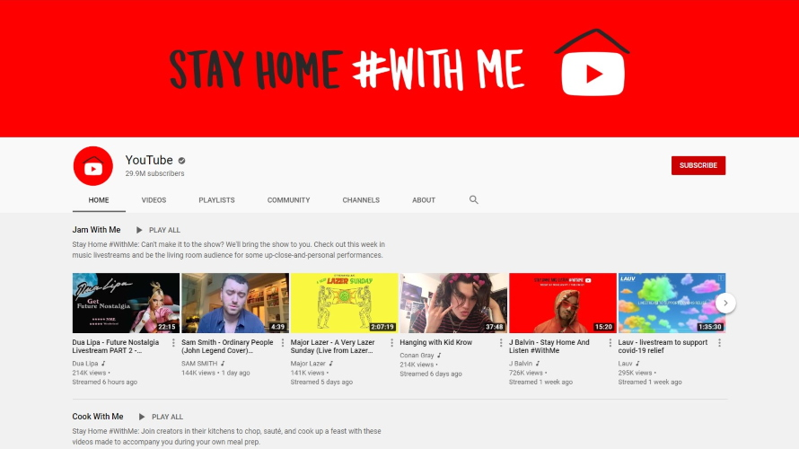
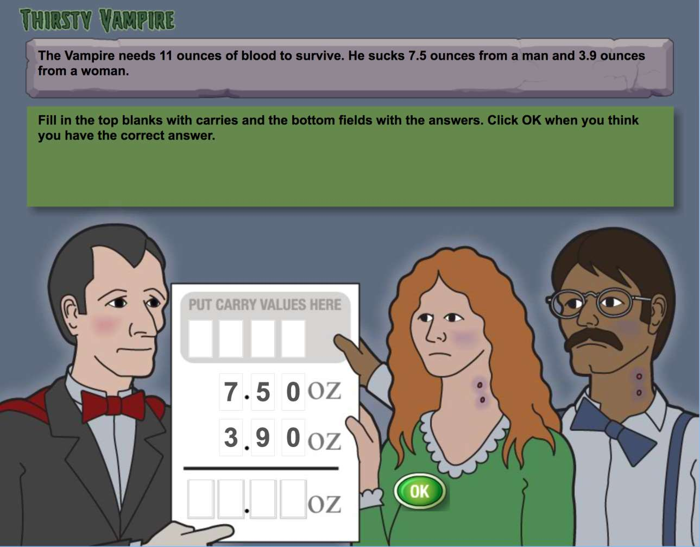
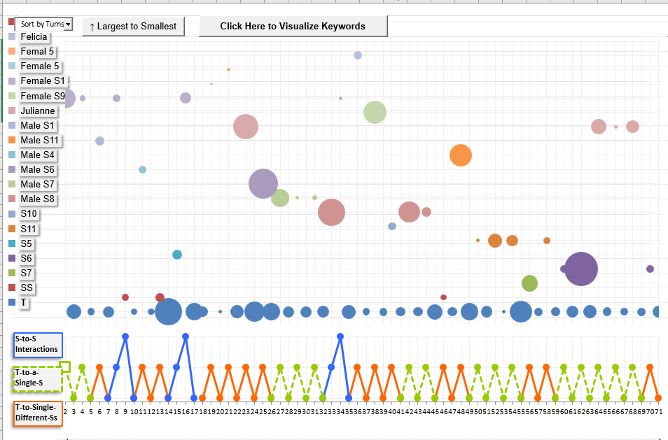
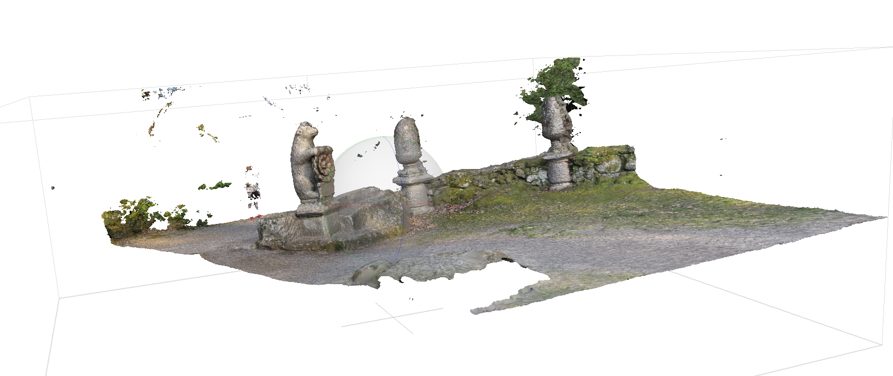

Social Computing
-

#StayHome #WithMe: How Do YouTubers Help With COVID-19 Loneliness?
User-shared videos generate parasocial attachment and virtual connectedness. However, there is limited knowledge of how creators contributed videos during disasters to provide social provisions as disaster-relief. We used Weiss's loneliness theory to examine how YouTubers provided friend-like, mentor-like, and family-like provisions through videos in different styles.
#StayHome #WithMe: How Do YouTubers Help With COVID-19 Loneliness?
Shuo Niu, Ava Bartolome*, Cat Mai*, and Nguyen B. Ha* CHI '21
-

Emotional Analysis Via Content Creation on YouTube During COVID-19
This is my final project for my class with Nguyen Ha. We were interested in the emotional response and coping mechanism of content creators on YouTube during COVID-19. We applied the fight-or-flight framework to analyze how content creators could contribute to mental health for audience. Our approach was to analyze the description and hashtags of the video and use a classifier to create a predictive tagging model.
Remark: I wish our analysis on emotional analysis was stronger and we had dived deeper into the evaluation of our classifier. Affection and support via YouTube content is explored in depth and more rigorously in our lab's #StayHome #WithMe - A Call for Videos During COVID-19 paper.
Final Report
Learning Sciences
-

Upcoming
AdaptErrEx - Learning Decimals through Game
This summer 2021, I will be working with Dr. Bruce McLaren and his lab on intelligent tutoring system, specifically in education games. Since February, I have been doing some Decimal Point game testing for them.
-

Classroom Discourse Analysis for Student-driven Conversation
For 3 years, I worked with Dr. Sarah Michaels at the wonderful NGSX Learning Lab to observe and improve science curriculum for underfunded Worcester high schools. We in turn used our field data to improve professional development for K-12 science educators.
I was particularly interested in using Classroom Discourse Analyzer and building a machine learning model to understand how different factors like teacher's talk moves, class composition, seating arrangement would affect discussion equity -- the notion that students deserve to lead classroom discussion and talk time. We looked at turn-depth of a teacher-student conversation and tried to find patterns of highly productive student-driven discussion. Unfortunately, our work did not result in any tangible output.
Other
-
Maintaining
YouTube Scraper and Decoder Python Package
Dr. Shuo Niu and I wrote the beginner-friendly YouTube crawler pipeline and a .json decoder specifically for retrieved file from YouTube API request. I packaged it and am currently the lead developer. My lab has been using this package for several projects. After I'm done with documentation and unit test, we will be ready to release the source code.
Stable release with limited docs on PyPI. -

Geovisualization of Garden of Bomarzo
I used Agisoft Metashape to render 3D models based on photos from Garden of Bomarzo (Italy). During this summer project, Dr. John Garton and I were building prototypes locally and developing proof of concept for the multi-institution conservation and reconstruction project.
My early attempts at creating the photogrammetry of the statues helped Dr. Garton’s colleague to secure a national Futures grant and helped Dr. Garton to present the project to grant boards.
#TeamTrees - 20 Millions Tree by 2020
#TeamTrees is a year-long 2019 initiative that managed to raise $20 million before 2020 to plant 20 million trees. Activism on YouTube takes on many form, for example, using kill count in Diablo to donate to the campaign. Using YouTube's metadata, we want to investigate how different category of content creators participate in a good-cause social media campaign via a case study of #TeamTrees.